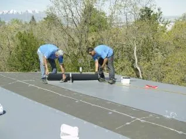
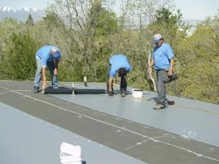
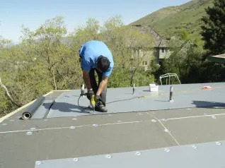
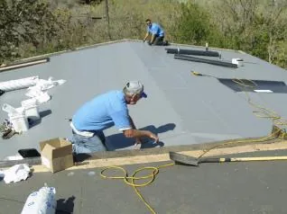
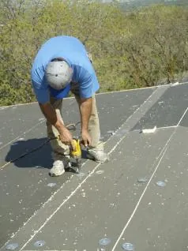
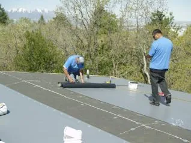

Request Free Quote!
What is a Single-Ply Roof Membrane?
A single-ply roof membrane is a type of sheeting designed for low-slope roofs. It comes in wide rolls, so it has few seams and offers easy installation.
Most single-ply membrane roofs are easy to maintain and repair, so if you have a flat or low-slope roof, it’s definitely a great option to consider. A manufacturer’s warranty provides up to a lifetime of coverage and is a valuable option available on many single-ply membrane roof systems. As Utah’s local roofing contractor, American Roofing has been in business for more than 60 years, making us a premier single-ply roofing company.






How Long Does Single-Ply Roofing Last?
The life of a single-ply roofing system depends on the type of material used. A single-ply membrane roof warranty usually lasts 15-30 years.
What Types of Single-Ply Roof Membranes Are Available?
With various types of single-ply roofing materials available, knowing which suits your project can be challenging. A knowledgeable single-ply roofing contractor can outline the pros and cons of different roofing materials, including TPO (thermoplastic polyolefin), PVC and PVC-KEE (polyvinyl chloride), and EPDM (Ethylene propylene diene terpolymer).
Commercial Single-Ply Roofing
If you’re looking into single-ply roofing for your commercial building, it’s important to know everything about this particular roofing type. The pros include:
- Ease of Installation: Single-ply roofing is easy to install which means it can be more affordable than other roofing options. It may also require less time to install.
- Energy Efficiency: If you want to save money on your commercial building, choose single-ply roofing that reflects sunlight.
While single-ply roofing is great, it has some cons. Familiarizing yourself with all the details of your roofing is vital. Here are some things to look out for:
- Pricing: It can be difficult to keep the bill low with commercial single-ply roofing, as the cost of materials and installation can be high.
- Environmental Costs: If a fire occurs, damaging toxins may be released due to the materials used in single-ply roofing.
Residential Single-Ply Roofing
Residential single-ply roofing has its upsides and downsides. Here are some of the pros that come with this kind of roofing:
- Flexible: Due to the flexibility of single-ply roofing options, you can have a unique-looking roof.
- Safe: Your family will be protected from the elements and other outdoor dangers when you choose single-ply roofing for your residential location.
Cons of residential single-ply roofing:
- Limited Designs: Single-ply roofing is a “what you see is what you get” option.
- Initial Cost: Your initial cost may be high due to the cost of materials and the price of hiring someone to install the roofing.
Contact American Roofing Company
If you are considering having a single-ply membrane roof installed on your home or commercial building, American Roofing Company is happy to serve you. As a long-standing single-ply roofing company, we’re well experienced with single-ply membrane roof installation. Contact us today to learn more about single-ply roofing details and get a free estimate.
Single-Ply Roofing Contractor FAQs
Do you have questions about our single-ply roofing company? Check out some of the most commonly asked questions below: